Setting up a JS project with Webpack and ESLINT
I just started using Webpack and ESLINT. Everytime I use it I have had to either go back to the documention or to a video tutorial, this can either be good or bad. Yes, it helps me understand it better, but also sometimes there is just too much information about extra pluggins, libraries or other stuff I don't need at the moment which ends up just adding extra noise.
To help my self to remember the most basic stuff in a quick manner, I decided to make a quick guide on how to set up a project utilizing Webpack as a bundler and ESLINT to keep my code more consistant and following the best standards.
With that said, It's very important to keep your self updated to any changes in either Webpack or ESLINT. For that reason, under every step of this guide there will be a link to more information (the official documention) about said step, including pluggins and packages used.
This guide is quick by all means, I won't go into details on how things work, by this point you should already have an idea of what to expect from Webpack and ESLINT.
Github
Create a new repository in Github.
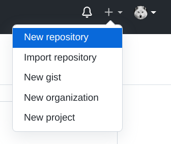Choose a name for your new repository.

Add a README file.
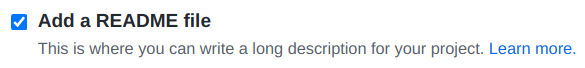Create Repository.

Navigate to the main page of the repository and copy the SSH key.

Open the terminal, and change the current working directory to the location where you want the cloned repository. Type git clone and then paste the SSH after.
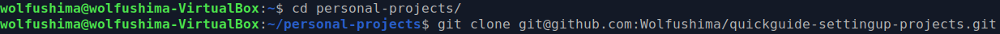Directories
Create the next directories and files (wolfushima.jpg can be any img):
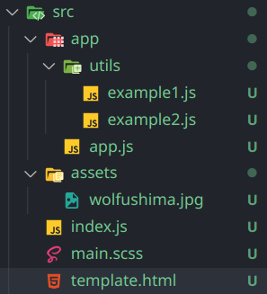Write the code corresponding to their file name (this is to test everything works properly when running webpack)
 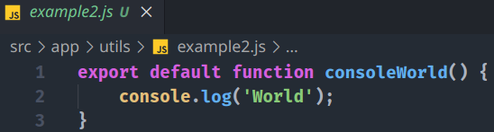 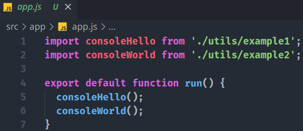 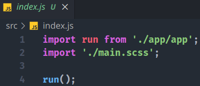 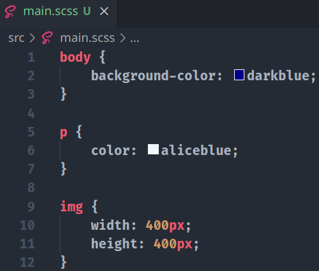
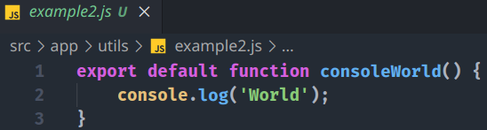 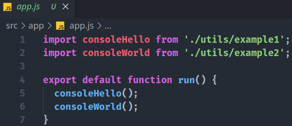 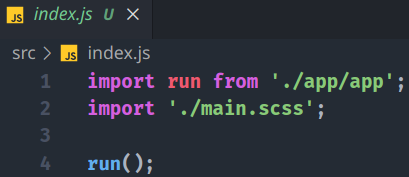 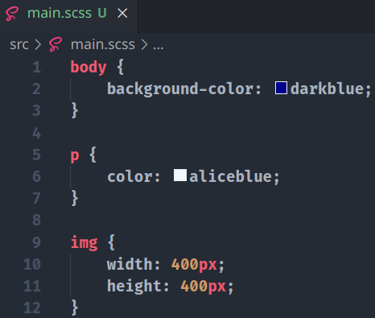 
Webpack
...
ESLINT
...